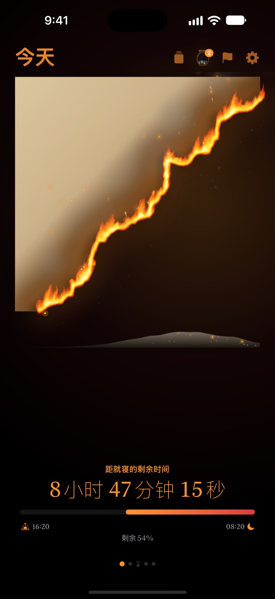
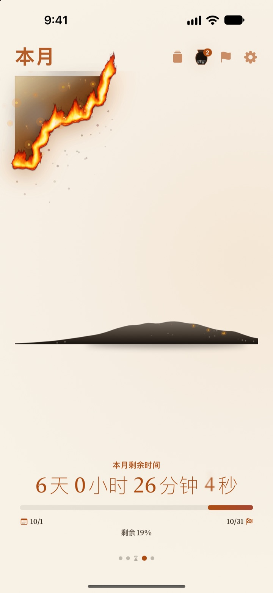
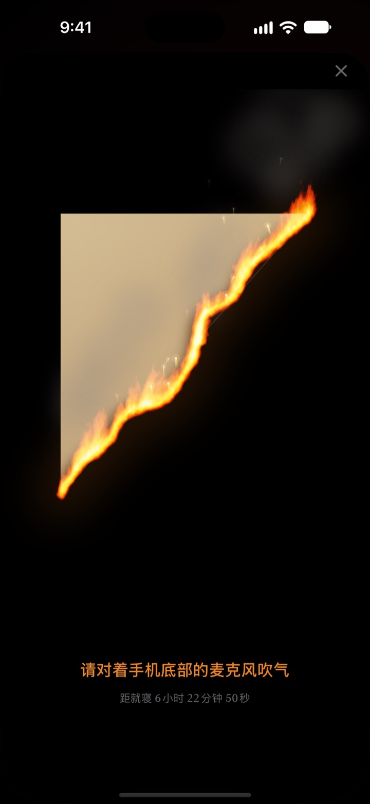
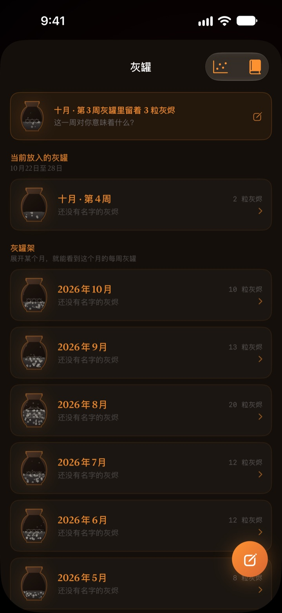

今天剩下的时间
正在眼前燃烧
换成数字时毫无感觉的夜晚，变成燃烧的羊皮纸就完全不同了。睡前30分钟，对着屏幕吹一口气把火吹灭，结束这一天。
燃烧的羊皮纸、吹灭火焰和回顾全部免费。

亲手吹灭试试
先把时间拖到快睡觉的时候，再长按按钮，或者对着麦克风吹一口气。
有没有过一抬头，“怎么已经十二点了？”
吃完晚饭歇了一会儿，一天就没了。钟表上的数字每晚看起来都一样，所以感觉不到时间在减少。燃烧的羊皮纸把剩下的时间变成一张正在燃烧的羊皮纸，让你在夜晚溜走之前就察觉到。
一天、一周、一年，都在燃烧
从醒来那一刻到睡觉时间，羊皮纸慢慢燃烧。这周、这个月、今年还剩多少时间，也能用同样的羊皮纸来看。
有日期的目标可以添加为截止日期，一起倒数到那一天。

吹一口气，结束这一天
睡前30分钟起，对着燃烧的羊皮纸吹气就能把火吹灭。只检测气息的强度，什么都不录。
吹灭后剩下的碎片会被收好。翻过来，还能在背面为今天写下一句话。

过去的时间化作灰烬
回顾这一天写下一句话，再把这段时间用在了哪里，作为一个点放到两条轴上。回顾按周和月堆进灰罐，也可以在回顾书里重新翻看。
灰烬流向用分布图和火种日历告诉你，时间都去了哪里。

三步就能开始
- 1
设定起床和睡觉时间
点右上角的齿轮修改。羊皮纸会按这个时间点燃、熄灭。
- 2
选择想看的时间段
左右滑动切换一天、一周、一个月、一年，不需要的页面可以在设置里隐藏。
- 3
添加小组件
放到主屏幕或锁定屏幕上，不打开 App 也能看到剩下的时间。
在哪里看剩下的时间
- 一天
- 从醒来到睡觉
- 一周 · 一个月 · 一年
- 这周、这个月、今年还剩多少
- 自由时间
- 只在除去睡眠和工作、真正属于自己的时间里，本周的羊皮纸才会燃烧（Pro）
- 截止日期
- 距离目标日期还剩多少时间，可免费添加1个
- 主屏幕小组件
- 一天的羊皮纸有小、中、大三种尺寸，周、月、年和截止日期有小、中两种
- 锁定屏幕小组件
- 圆形、矩形和单行
- 灵动岛 · 实时活动
- 睡前1小时起显示，或全天显示，可在设置中选择或关闭
展开灵动岛，可以看到燃烧的羊皮纸和完整的倒计时。
羊皮纸免费，想留住更多就用 Pro
免费
- 一天、一周、一个月、一年的羊皮纸
- 睡前吹灭火焰，收集碎片
- 一句话回顾、灰罐和回顾书
- 晨间确认，可连接健康 App 的睡眠数据
- 主屏幕和锁定屏幕小组件、灵动岛
- 1个截止日期
燃烧的羊皮纸 Pro
- 只燃烧属于自己的自由时间
- 羊皮纸主题：月光韩纸、青瓷、晚霞
- 火焰样式：野火、炭火、火星
- 把收集的碎片做成卡片和海报分享
- 把回顾书导出为 PDF
- 过去十二个月的灰烬流向
- 不限数量的截止日期
不是订阅。一次购买，终身使用，以后新增的 Pro 功能也全部包含。
换了设备的话，在设置里点“恢复购买”即可。
常见问题
小组件和 App 显示的时间不一样。
受 iOS 机制限制，主屏幕小组件不会每秒刷新。打开 App 后会马上同步。想看按秒减少的倒计时，请看灵动岛和锁定屏幕上的实时活动。
吹了气，火却没灭。
睡前30分钟起才能吹灭。请确认已允许麦克风权限，然后靠近 iPhone 底部的麦克风，持续吹大约一秒。短促的一下声音是吹不灭的。
会录下我的声音吗？
不会。只检测吹气的强度，不会录制或保存任何声音。
睡着以后会显示什么？
过了睡觉时间，会出现一颗燃烧的心，显示到起床为止睡眠进行到哪里。第二天早上会问你昨晚有没有按时睡，如果睡晚了，今天早上的羊皮纸就会烧焦相应的一段。连接健康 App 后，就不再询问，而是直接使用记录的入睡时间。
什么时候会收到通知？
睡前1小时。如果没收到，请在 设置 > 通知 > 燃烧的羊皮纸 中确认已允许通知。
会很耗电吗？
App 内的倒计时每秒跳动，但小组件由 iOS 以低功耗方式刷新，对电池的影响很小。
我的记录存在哪里？
起床和睡觉时间、截止日期、回顾和灰罐都只保存在你的设备上。开发者只会收到匿名使用统计、崩溃诊断，以及你主动发送的反馈。没有广告，也没有追踪。
Pro 是订阅吗？
不是。付一次费就能终身使用。换了设备，在设置里点“恢复购买”即可。
问题反馈、功能建议或其他咨询，请发邮件至 leeo@kakao.com。